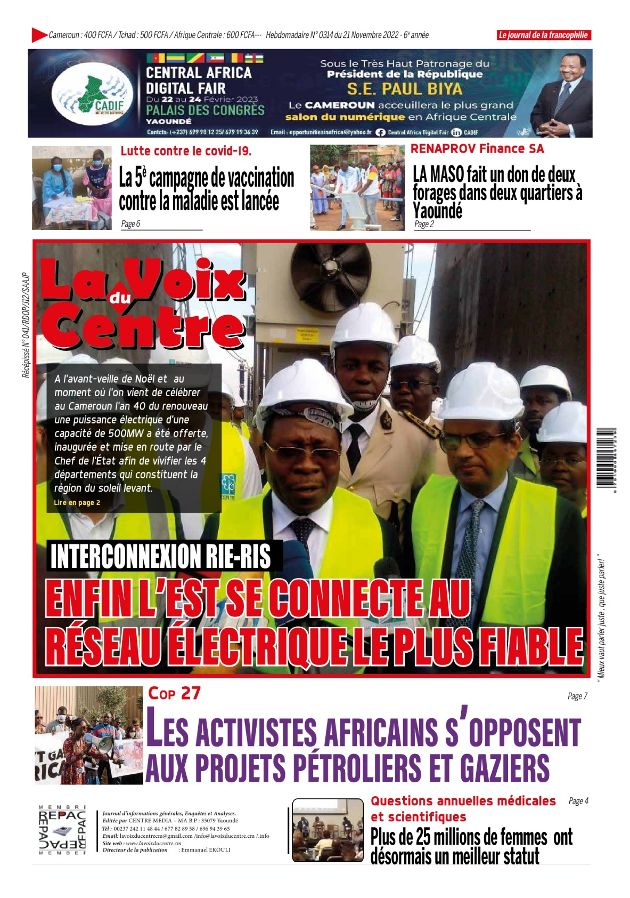
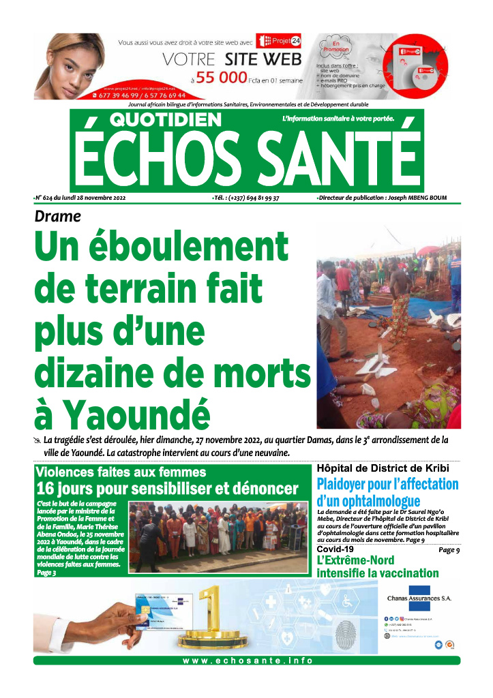
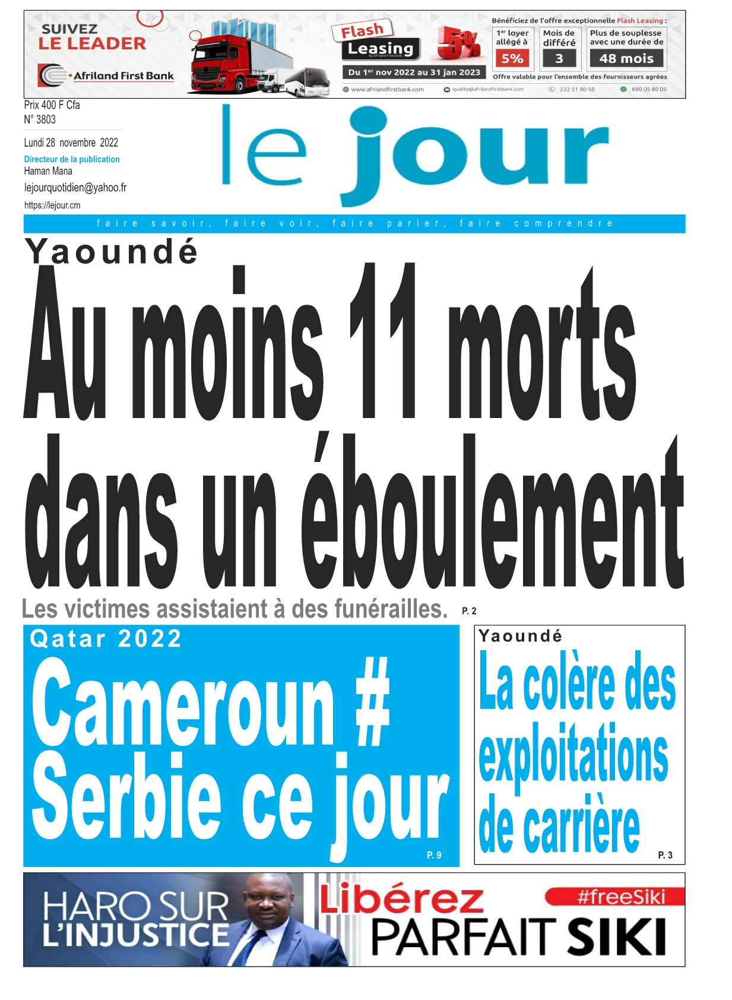
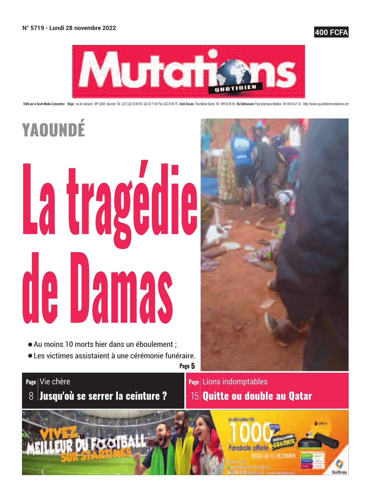

Que voulez-vous publier ?
Les dernières éditions du journal

La voix du Paysan
08/11/2022
Cameroun Tribune
08/11/2022

Echos Santé
08/11/2022

Le Jour
08/11/2022The Guardian Post
08/11/2022

Mutations
08/11/2022Les articles à la une

Conflit en Ukraine: Le message de paix de Yaoundé
Le gouvernement appelle en outre à l’ouverture des négociations
afin de mettre un terme à la guerre
en cours par la voie pacifique. .....
02-03-2022
08 min de lecture

Réindustrialisation Les usines retrouvent le Nord
Robotique innovante, textiles relocalisés… Les Hauts-
de-France mettent à profit leur situation géographique....
02-03-2022
08 min de lecture
Description
Le Cameroon Tribune est un quotidien généraliste camerounais
créé par le gouvernement en
1974.
Catégorie
Editeur
Téléphone
+237 66666666
Email
camerountribune@gmailcom
Les derniers articles
La coupe du monde quatar 2022...
La coupe du monde quatar 2022...
La coupe du monde quatar 2022...
La coupe du monde quatar 2022...
Montant disponible
50 000 FCFA
Nombre d'abonnés
250